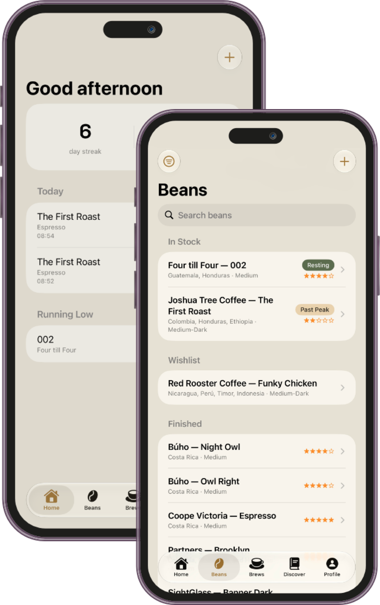

Nine Bar helps you track beans, dial in shots, and remember what worked — beyond espresso, to everything you actually make.

From bean to cup, whatever the method — Nine Bar keeps beans, equipment, dial-in history, and the drinks you actually make in one place, without turning coffee into a spreadsheet.
Smarter bean tracking, richer brew logging, easier equipment setup, and the introduction of Nine Bar Pro.
See whether an In Stock bean is Resting, Peak, Good, or Past Peak based on roast date and roast level.
Search your library and filter by roast level, process, status, rating, and freshness.
Guided milk selection, drink-type labels, smarter bean selection, and improved iced-drink handling.
Remove bean and equipment limits and unlock the full Nine Bar experience.
Nine Bar keeps the essentials fast to log, and gets out of the way otherwise.
Roaster, roast date, and freshness tracked automatically — know exactly when a bag is at its best.
Dose, yield, time, and pressure for every pull, so patterns show up on their own.
Every coffee drink you'll ever make, grouped into seven families — no more guessing what a cortado is.
Save a formula that works, and see which beans it's actually been best with.
Grinder, brew method, scale, kettle, water, and milk gear, organized in one place.
Find the right ratio before you even open the app — see it below, free for anyone to use.
Pick a method and a strength, enter what you've got, and get the rest — coffee, water, and how long to brew it.
Nine Bar is built to log fast and stay out of the way — four steps from opening the app to knowing what to repeat.
Add a bean to your library — roaster, roast date, and tasting notes in under a minute.
Log a pull — dose, yield, time, and pressure, plus what you actually made.
Rate the shot, so the patterns show up on their own over time.
Save what works as a recipe, and see which beans it's been best with.
Nine Bar works fully offline, with no account required. Your data stays on your device by default. Nine Bar Pro users can optionally create an account to sync their journal across devices.
Nine Bar is available on the App Store — start your journal and find your nine.
Clear answers for launch, usage, and expectations.
No. Nine Bar tracks the full range of coffee drinks — espresso, milk drinks, pour-over, cold brew, and more — grouped by the seven drink families in the built-in glossary.
No. Nine Bar works fully offline with no account required. Nine Bar Pro users can optionally create an account to sync their journal across devices.
The free tier lets you track up to 4 beans total across all statuses, 1 grinder, and 2 brew methods. Nine Bar Pro removes all three limits and unlocks paid capabilities, including optional cross-device sync. Pro is available as a subscription or a one-time purchase.
No. Nine Bar doesn't track you or sell your data. Everything you log stays on your device by default, and Nine Bar Pro users can choose to create an account for cross-device sync.